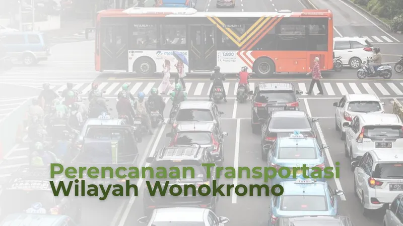

P01Pemodelan Transportasi dan Integrasi Transit Wonokromo
Ketua tim; delineasi 12 TAZ, pemodelan jaringan, dan pembebanan perjalanan di PTV Visum
Memimpin pemodelan transportasi Wonokromo berbasis 12 TAZ dan tiga kondisi jaringan di PTV Visum. Menerjemahkan hasil pembebanan perjalanan menjadi usulan feeder, halte, dan akses pejalan kaki yang terhubung dengan Stasiun Wonokromo serta Terminal Intermoda Joyoboyo.